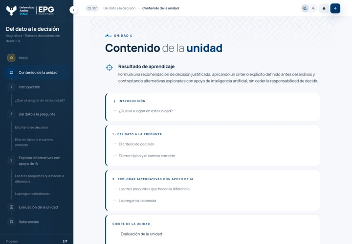
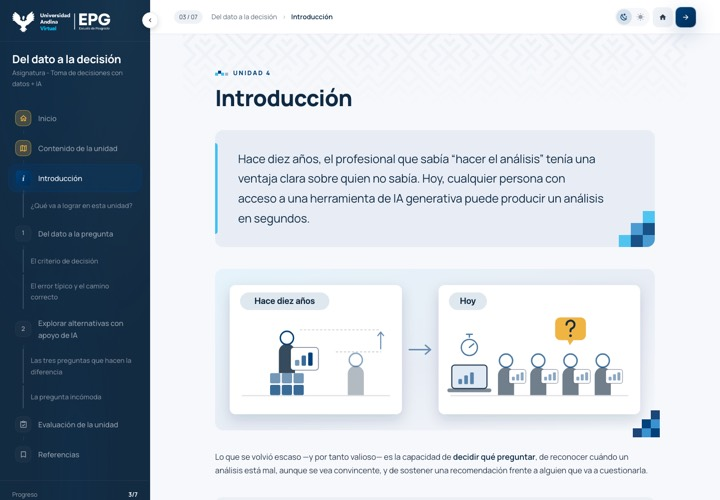

W
Diseño instruccional
Recibido
DI_Unidad4_Del_dato_a_la_decision.docx«Del dato a la decisión», 2 temas
Del Word del diseño instruccional al curso listo para el aula.
Un solo taller para Scala, Andina y Posgrados Panamericana, cada uno con su piel.
Así empieza: la maqueta vacía de Andina, con las secciones que se llenan desde el Word.
El Word está completo. Un error de origen detiene solo la figura 3; lo demás sigue.
El texto dentro de la imagen tiene una errata. La sección 5 se maqueta con un hueco donde va la figura hasta que llegue corregida.
El Word no trae subtítulo; se tomó el de la portada de la plantilla.


El diagramador leyó el Word y propone una pieza para cada bloque. Nada se escribe en el curso hasta que lo apruebes.
Del dato a la pregunta
tomar una decisión con datos empieza antes de abrir la hoja de cálculo.